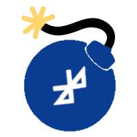
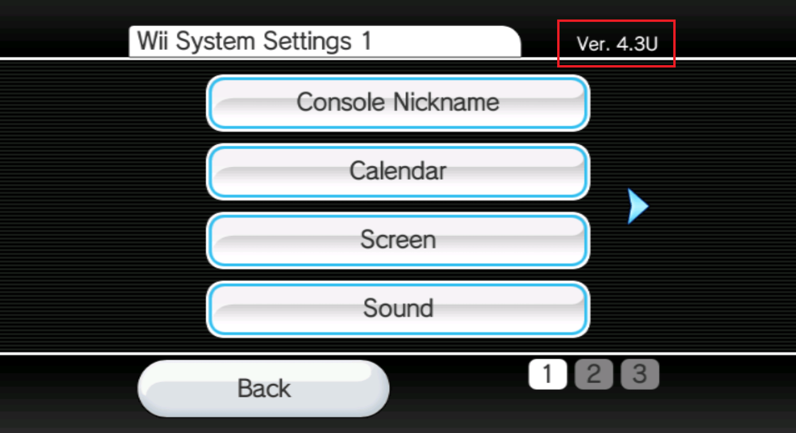

BlueBomb
Es wird dringend empfohlen, keine Video-Anleitung zum Hacken deiner Wii mini-Konsole zu verwenden, da hierbei ein extrem großes Risiko besteht deine Konsole zu Bricken.
Solltest du hinsichtlich dieses Tutorials Hilfe benötigen, trete bitte dem Wii mini Hacking-Discordserver bei (empfohlen)

BlueBomb ist ein Exploit, welcher eine Lücke in der Bluetooth-Programmbibliothek der Wii und Wii mini ausnutzt. Obwohl er als einziger Exploit auf der Wii mini funktioniert, kann BlueBomb auch auf der originalen Wii ausgeführt werden. Er kann ebenfalls dazu genutzt werden um einige Bricks, wie bspw. einen Banner-Brick, zu beheben.
Für die originale Wii empfehlen wir dir nicht, BlueBomb zu verwenden, falls du vorhast den Homebrew Channel und BootMii zu installieren, da einfachere Exploits verfügbar sind.
Abschnitt 1 - Voraussetzungen
- Ein Linux-System
- Eine virtuelle Maschine kann funktionieren, wird aber aufgrund ihrer Komplexität beim Durchlaufen von Bluetooth nicht empfohlen. Wenn möglich, verwende bitte einen LiveUSB wie unten beschrieben.
- Falls du einen Raspberry Pi besitzt, kannst du diesen stattdessen verwenden, weil dort Linux wahrscheinlich bereits installiert ist.
- Das Windows Subsystem for Linux wird nicht funktionieren, da es keinen direkten Zugriff auf den Bluetooth-Adapter oder die USB-Ports hat.
- Falls du kein Linux hast, ist Ubuntu die nutzerfreundlichste Option und kann auf Computern ausgeführt werden, auf denen Windows oder macOS läuft.
- 32-Bit-Geräte erfordern Ubuntu 16.04.
- Für 64-Bit-Geräte wird aufgrund der Stabilität die LTS-Version empfohlen, aber die aktuellste Version funktioniert ebenfalls.
- Du kannst Linux auch auf ein USB anstatt auf deinem Computer installieren.
- Ein Bluetooth-Adapter.
- Ein interner Bluetooth-Adapter wird funktionieren.
- Falls du keinen Bluetooth-Adapter besitzt, stelle sicher dass du einen erwirbst, welcher mit Linux kompatibel ist.
- Ein USB-Stick, der mit FAT32 formatiert ist.
- Dies kann nicht derselbe Stick sein, der für dein Linux-System verwendet wird.
Abschnitt 2 - Ausführen des Exploits
- Lade den HackMii Installer von der BootMii-Website herunter.
- (Falls du versuchst einen Brick zu beheben, solltest du auch die Homebrew-Anwendung, die du nutzen möchtest, nach /apps/ kopieren)
- Extrahiere ihn und verschiebe die
boot.elf-Datei auf dein Laufwerk.- (Auch für eine Wii mini, bootmini.elf wird nicht funktionieren, sein Zweck ist völlig anders und steht in keinem Zusammenhang damit. Verwende boot.elf in allen Fällen). 1. Verbinde das Laufwerk mit deiner Konsole. Bei einer Wii mini befindet sich der USB-Anschluss auf der Rückseite. Benutze bei einer normalen Wii den unteren Anschluss. (oder den rechten Port bei senkrechter Aufstellung). 1. Schalte deine Konsole an und navigiere in die Systemeinstellungen. In der oberen rechten Ecke wirst du einen vierstelligen Code, ähnlich dem im Bild unten. Dieses Kürzel ist deine Wii-Menü-Version. Notiere sie, da du sie später benötigen wirst. Schalte danach deine Konsole aus. 
- Starte deine Linux-Distribution und stelle sicher, dass du mit dem Internet verbunden bist.
- Schalte deine Konsole ein und verbinde keine Wii-Fernbedienungen.
- Führe folgende Befehle aus:
wget https://wii.guide/assets/files/bluebomb-helper.sh chmod +x bluebomb-helper.sh ./bluebomb-helper.sh - Der Helper beginnt dann mit dem Herunterladen der benötigten Dateien und wird dich über Informationen zu deiner Konsole befragen.
- Falls du eine Wii mini ausgewählt hast, wirst du nach deiner Region gefragt. Diese kann über den letzten Buchstaben der Wii-Menü-Version ermittelt werden (
Ufür US- undEfür PAL-Modelle). - Falls du eine Wii ausgewählt hast, wirst du nach deiner Wii-Menü-Version gefragt (welche du in Schritt 4 herausgefunden hast)
- Falls du eine Wii mini ausgewählt hast, wirst du nach deiner Region gefragt. Diese kann über den letzten Buchstaben der Wii-Menü-Version ermittelt werden (
- Schalte deine Konsole ein und verbinde keine Wii-Fernbedienungen mit ihr.
- Drücke wiederholt den SYNCHRO-Knopf (SYNC.), bis das Terminal
got connection handleanzeigt. Dies kann mehrere Versuche erfordern, gib also nicht auf.
Stelle sicher, dass die Konsole sich in der Nähe des Computers befindet, welcher den Exploit ausführt, was idealerweise weniger als 1 Meter betragen sollte.
Die Konsole sollte nun den HackMii Installer starten. Falls du ihn nicht mehr benötigst, kannst du nun den Linux-Computer ausschalten.
Falls du eine Wii verwendest, fahre damit fort den Homebrew-Kanal und BootMii zu installieren
Falls du eine Wii mini verwendest, fahre damit fort den Homebrew-Kanal zu installieren